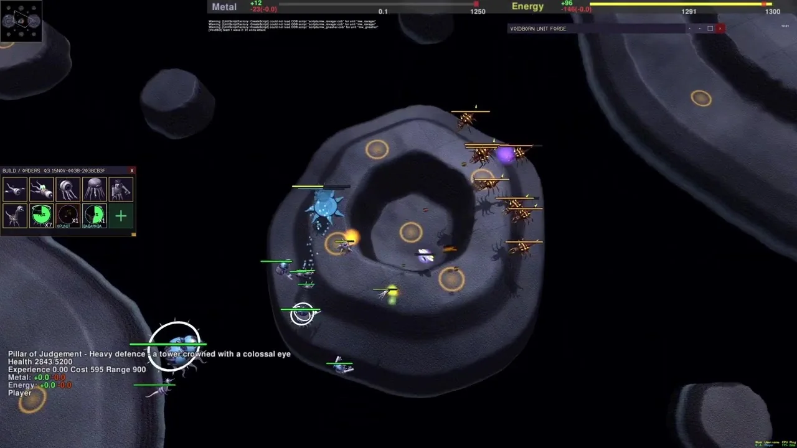

Voidborn is young. This is what is being worked on now, in the order it is being worked on – and the parts of it that need somebody other than the author to happen.
In development
The forge already prices a custom unit: the stronger it is, the more metal and the more build time it costs. What is missing is the other half – a balance pass over the whole roster of custom units, so that a design nobody plays against is not worth making, and a design that beats the game is taxed so hard it is not worth making either.
Price curves per stat, a balance table for the existing units, and a way to see what a design is worth before you build it.
In development
Right now a factory builds one tier of units. The next step is a factory that can be upgraded into its second tier: bigger, more expensive, with a build time of its own and a production line that can be switched over. It gives the economy a second decision to make and the armies a second step to grow into.
Upgrade buildings, a tier two for each unit line, and the balance to go with them.
In development
Units already grow with experience and split in two. Evolution takes that further: a unit that has fought long enough evolves into its next form, stronger and different, instead of only splitting. Proliferation control is the brake on it – a way to keep the number of units in a fight, and the metal in the map, in check.
An evolution track per unit, the resources to feed it, and caps that keep the late game from boiling over.
Planned
Two armies are a choice, three are a war. A third faction needs its own shape, its own units, its own economy and its own art – and a balance that makes three different ways to play worth playing. It is the biggest single piece of work on this list.
A design for what it is and what it fights with, then the models, the units and the map support for it.
Planned
Games should be easy to find and easy to watch after the fact. A hosted service with a persistent world, a list of the matches running on it, and a replay archive that keeps the good games – with the demo games of the bot included.
A server that runs on its own, a place to browse the live games, and a replay gallery that does not rot.
Looking for help
Voidborn on Steam means a bigger audience, and it means a different kind of audience: people who want to look at what is being made, to follow it, and to tell the others about it. That takes people who can spread the word and people who can put it in front of them.
A Steam page, a demo in the Steam workshop, and – if you are a streamer, a youtuber, a curator or a distributor who thinks a game about creating your own OP units is worth talking about – a way in. Join the Discord and say so.
A recording of Voidborn 1.0 in play – the armies, the factories, the build panel and the unit forge doing their thing.

On YouTube – 26 minutes.